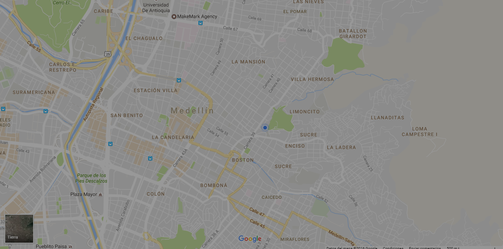

    <nav class="fondo-naranja">
        <div class="nav-wrapper">
            <a class="brand-logo margin-left100px"><i class="fa fa-street-view color-blanco" aria-hidden="true"></i><strong><span id="usuario" class=""></span></strong></a>
            <ul id="nav-mobile" class="right hide-on-med-and-down">
                <li><a href="#" data-activates="slide-out" class="buscar-mapas btn waves-effect waves-light">buscar mapa</a></li>
                <li><a id="cerrar-sesion" class="btn waves-effect waves-light green" href="#!">cerrar sesion</a></li>
            </ul>
        </div>
    </nav>
    <ul id="slide-out" class="side-nav">
        <li>
            <div class="userView">
                
                <h3><span class="white-text email"><i class="fa fa-street-view color-blanco" aria-hidden="true"></i>Map`s</span></h3>
            </div>
        </li>

        <li class="container">
            <form>
                <div class="input-field col s12">
                    <select name="nombre-lugar" id="select" class="browser-default">
                        <option value="" disabled selected>elije una opcion</option>
                    </select>
                    <input id="datos-sector" type="text" name="result-lugar" value="" disabled="disabled" placeholder="ruta">

                    <br>

                    <select name="nombre-ruta" id="select-ruta" class="browser-default">
                        <option value="" disabled selected>elije una ruta</option>
                    </select>
                    <input type="text" name="result" value="" disabled="disabled" placeholder="ruta">
                </div>
                  <button class="btn waves-effect waves-light" type="" name="">buscar</button>
            </form>
        </li>
        <!--<li>
            <div class="divider"></div>
        </li>-->
    </ul>
    <section class="container relleno-bajo100px">
        <h2 class="center">RUTAS</h2>
        <p class="center">Registro de las rutas dentro de la ciudad de medellin</p>
        <div id="map" style="height: 500px;"></div>
    </section>
    <div class="fixed-action-btn horizontal click-to-toggle" style="bottom: 45px; right: 24px;">
        <a class="btn-floating btn-large blue waves-effect waves-light">
            <i class="fa fa-bars" aria-hidden="true"></i>
        </a>
        <ul>
            <li>
                <a id="cerrar-sesion" class="btn-floating tooltipped red" data-position="top" data-delay="50" data-tooltip="cerrar sesion"><i class="fa fa-sign-out" aria-hidden="true"></i></a>
            </li>
            <li>
                <a ui-sref="route2" class="btn-floating orange tooltipped" data-position="top" data-delay="50" data-tooltip="listado de rutas"><i class="fa fa-server" aria-hidden="true"></i></a>
            </li>
        </ul>
    </div>